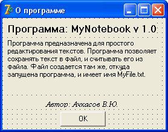
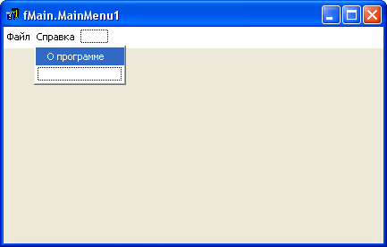

Модальные окна
Модальным называется дочернее окно, которое не дает главной форме работать, пока не закончена работа этого модального окна.
До сих пор мы делали проекты только с одной формой.
Настало время изучить многооконные проекты.
Воспользуемся предыдущим примером – редактором текстов.
Откройте этот проект, если он закрыт.
Чтобы создать новое окно, выберите команду "File – New – Form".
В свойстве Caption новой формы напишите "О программе", форму назовите fAbout и сохраните проект.
Модуль новой формы, соответственно, назовите About.
На форму установите компонент Label, напишите в его свойстве Caption "Программа: MyNotebook v 1.0".
Ниже установите еще один Label.
Свойство AutoSize (автоматическое изменение размера) поставьте в False, а свойство WordWrap (перенос слов на другую строку) – в True.
Здесь напишите такой текст:
Программа предназначена для простого редактирования текстов.
Программа позволяет сохранять текст в файл, и считывать его из файла.
Файл создается там же, откуда запущена программа, и имеет имя MyFile.txt.
Ниже установим еще один Label.
Пишем в нем: "Автор: такой-то", можете указать свои собственные фамилию, имя и отчество.
Будет красиво, если текст этого компонента выйдет посередине.
Чтобы добиться этого, свойство AutoSize (автоматическое изменение размера) установите в False, свойство Alignment (выравнивание текста) в taCenter.
Ниже устанавливаем кнопку.
Пишем на ней "ОК" и создаем обработчик кнопки для выхода из формы.
Инструкция Close главной формы закрывает всю программу, а инструкция Close модального окна закрывает только это окно.
Можете "поиграть" со свойствами Font и Color компонентов, чтобы форма выглядела красивее.
Подобные окна не имеют кнопок "Свернуть" и "Развернуть", поэтому в свойстве BorderStyle формы fAbout выберите значение bsDialog.
А в свойстве Position (Позиция формы при ее открытии) выберите poMainFormCenter, чтобы форма появлялась по центру главного окна.
Обратите внимание на последнее свойство.
Обычно для главных окон программы это свойство устанавливают в poDesktopCenter, чтобы форма появлялась по центру рабочего стола, запомните это на будущее.
Теперь, чтобы можно было вызывать это окно модально, нужно "привязать" его к главной форме.
Сейчас в редакторе кодов имеется две вкладки – Main и About, это модули главной формы и формы "О программе".
Перейдите на вкладку главного окна и нажмите <F12>, чтобы вызвать это окно.
Выберите команду "File – Use Unit".
Откроется окно, где мы увидим нашу модальную форму.
Выделите ее и нажмите OK.
Теперь, если Вы посмотрите код главной формы, под разделом implementation Вы увидите такую картину:
implementation uses About;
Delphi вставила инструкцию, при которой главная форма использует все, что описано в коде модального окна.
Можно было набрать все это вручную, однако во избежание ошибок рекомендуется пользоваться командой "File – Use Unit".
Тогда код точно будет введен без ошибок, и именно в то место, которое нужно.
uses About;
Теперь в главной форме снова откройте редактор главного меню, дважды щелкнув по компоненту MainMenu.
Выделите пункт справа от "Файл", и в свойстве Caption напишите "Справка".
А в пункте ниже напишите "О программе":
При разработке меню не забывайте о стандартах, принятых в Windows.
Никто не запрещает Вам засунуть подраздел "О программе" в Пункт "Файл" или какой-нибудь другой.
Однако пользователь будет искать его именно в разделе "Справка".
Не заставляйте пользователя привыкать к другим стандартам, если хотите, чтобы ваши программы пользовались спросом!
Теперь нужно написать код вызова модального окна.
Дважды щелкните по подразделу меню "О программе", чтобы создать процедуру обработки этого подраздела.
Там введите инструкцию:
fAbout.ShowModal;
Помните, что мы вызываем форму модального окна ( fAbout ), поэтому нужно обращаться именно к ней.
Сохраните проект, скомпилируйте программу и посмотрите результат.